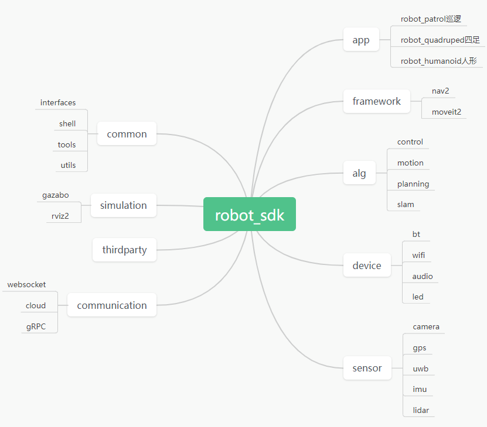

1. Robot SDK概述
RobotSDK —- 大脑应用板/主板，为robot_kit/rotot_sdk部分:
大脑基于视觉导航算法，融合奥比深度点云数据，提供机器人应用业务框架，支撑开发者二次开发强大的ai智能能力集，赋予机器人各种场景服务能力
RobotSDK提供app sample支持机器人类型为：
Quadruped robot 四足仿生机器人
Food Delivered services robot 送餐服务机器人
Industrial robotic arm services robot 工业协作定制服务机器人
RobotSDK 依据运动机构分类，支持运动机构类型为：
两轮/差分/阿克曼
四足
机械臂
运动机构由大脑经由外部通信，传输控制指令给小脑，小脑专注提供实时复杂运动控制能力给到机器人支撑
依据RobotSDK提供的组件各种能力的融合，开发者可以为产品定制化各种类型功能 app/xxx/onfig 提供灵活的配置选择，开发者也可在此配置选项的基础上进行深度定制集成
Robot SDK 软件目录
